11 plates. Deterministic overlays rendered by the composition-analysis skill.
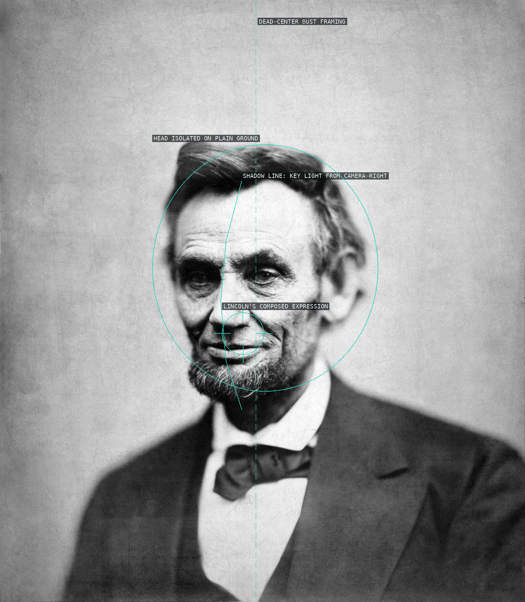
01-lincoln-cracked-plate A level, dead-center bust portrait whose symmetry is cut by a hard one-sided shadow, isolated against acres of plain studio ground.
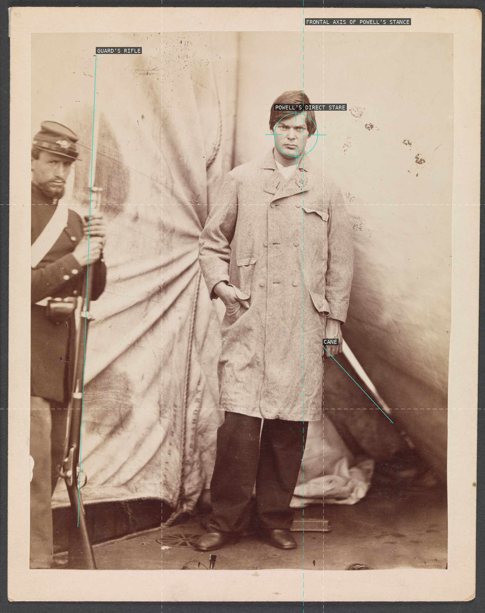
02-lewis-powell-conspirator Powell's frontal stare and centered stance fill the vertical frame; the guard's rifle at the left edge and the cane in his own hand are the only reminders he is a prisoner, not a sitter.
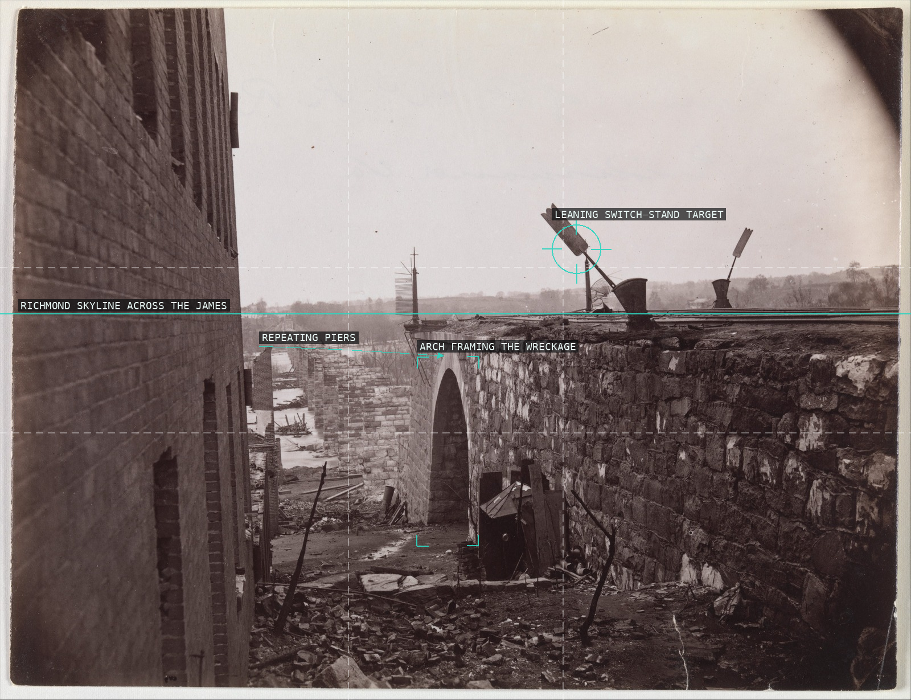
03-ruins-richmond-bridge A landscape built on structural rhythm: the surviving piers recede on a strong diagonal into the Richmond skyline, anchored by the near arch and a canted trackside signal.
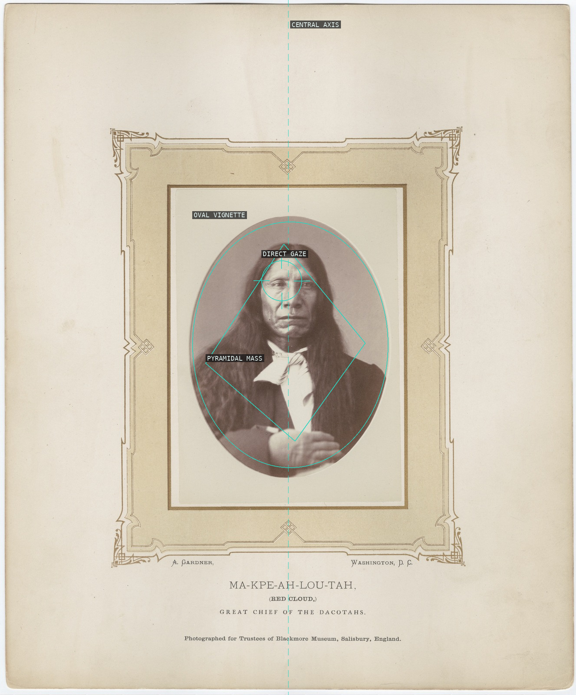
04-red-cloud-portrait A dead-center axis and studio oval vignette isolate Red Cloud against a plain backdrop, his draped shoulders and folded hands closing into a stable pyramidal mass beneath a level, direct gaze.
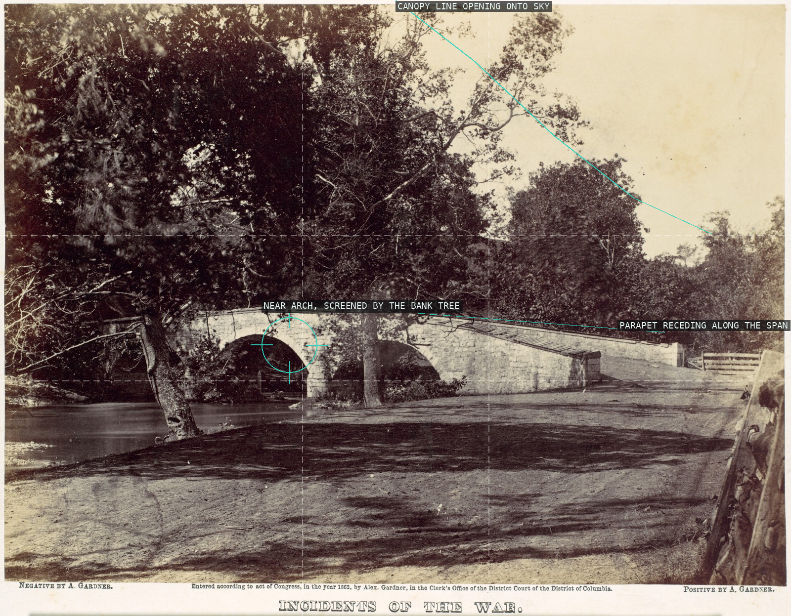
05-burnside-bridge-antietam A canopy of trees crowds most of the frame, funneling the eye down the bridge's receding parapet to the single arch it half conceals.
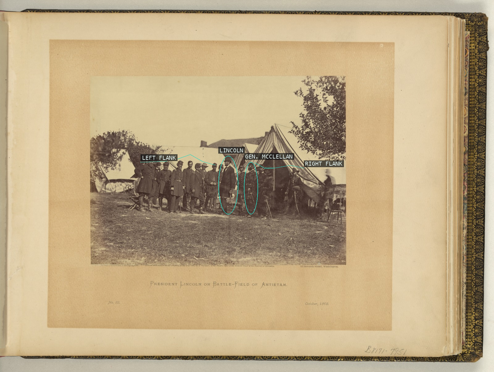
06-lincoln-mcclellan-antietam A single gap -- one empty camp chair wide -- breaks the sixteen-man line and isolates Lincoln and McClellan at center; pure lateral spacing does the framing, not a doorway or arch.
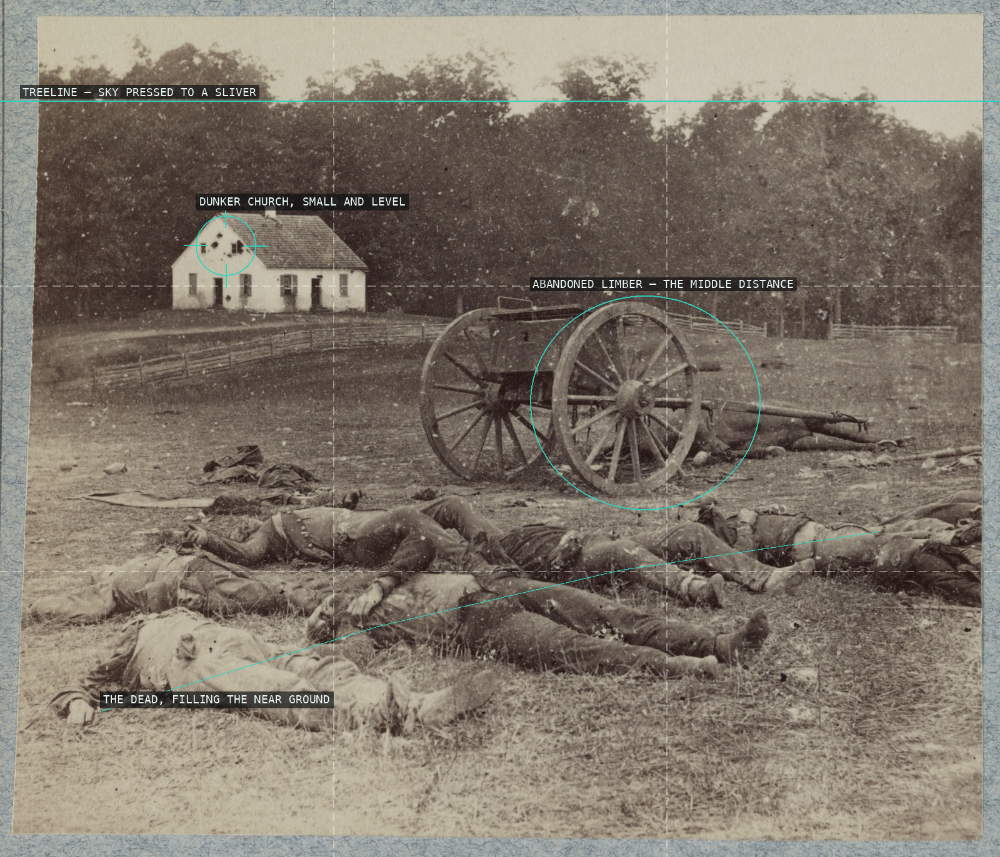
07-dunker-church-dead-antietam An acre of foreground dead, pivoting on an abandoned limber, is measured against one calm, small anchor pressed onto a horizon squeezed to the top of the frame.
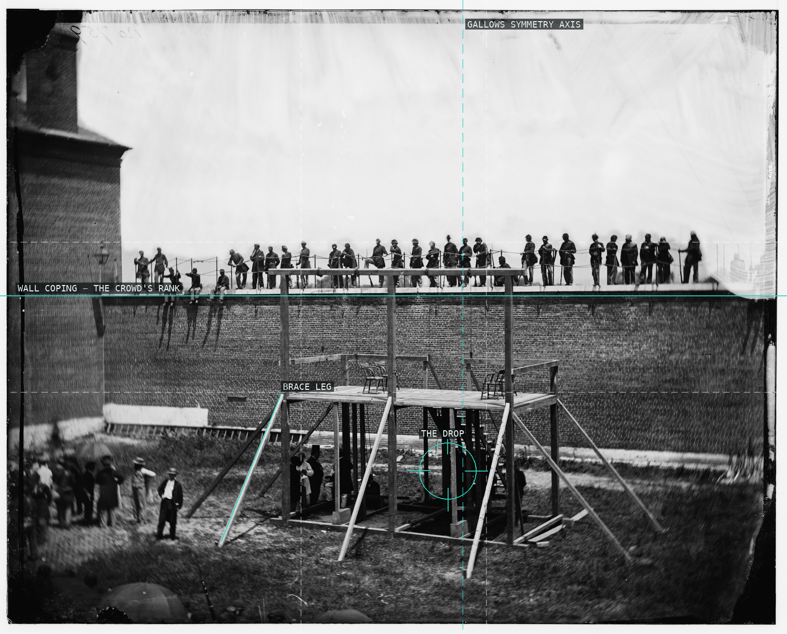
08-execution-scaffold-conspirators A coping line racks the ranked witnesses above a near-symmetrical timber gallows, whose braced legs and trapdoor stage the drop itself as the picture's true subject.
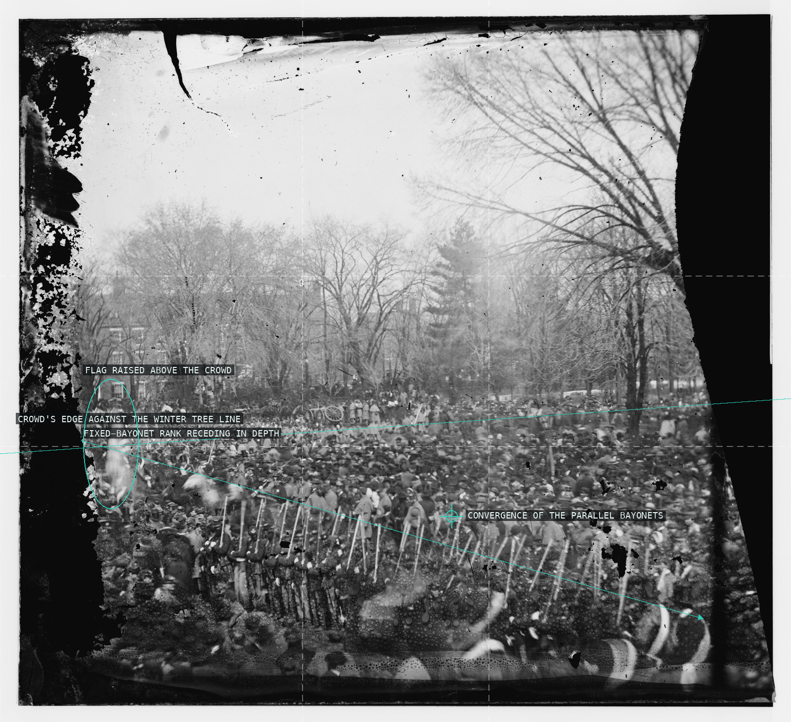
09-crowd-second-inauguration An anonymous, unbroken mass of onlookers is individuated only by the diagonal hedge of fixed bayonets receding into depth and the flag raised above it.
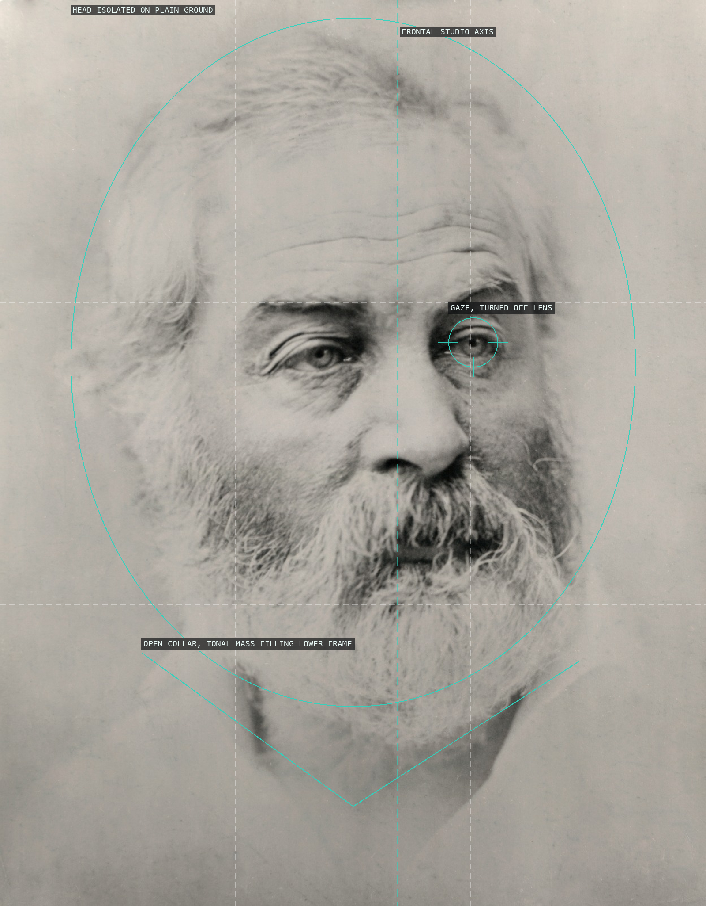
10-walt-whitman-portrait A literary sitter given the same frontal studio economy as Gardner's soldiers and statesmen -- symmetrical bust framing and a plain ground, cut only by Whitman's gaze drifting off the lens and the soft coat-and-collar mass anchoring the bottom of the frame.
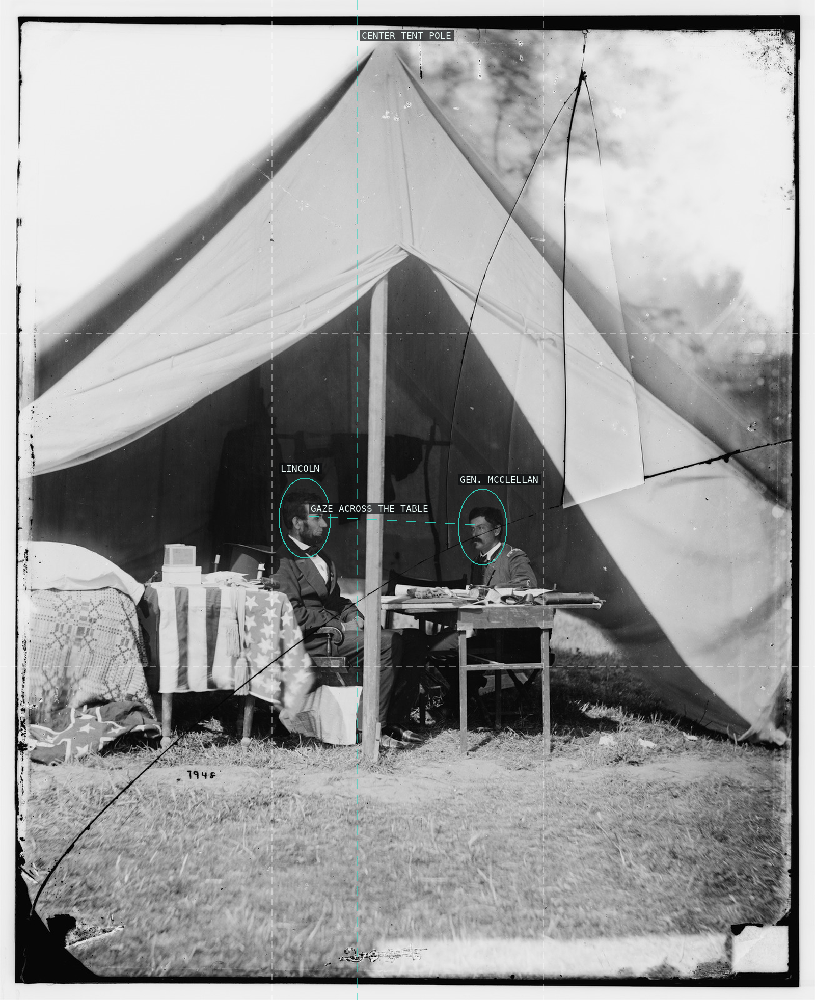
11-lincoln-mcclellan-tent The tent's own center pole splits the frame precisely between the two men, whose level gaze bridges that divide across the map-strewn table.